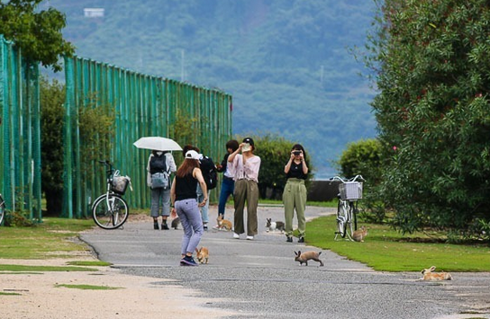

Did you know?
Japan has a small island where rabbits rule. 🐇 Okunoshima was infamous for its role in chemical warfare during World War II and is now a popular tourist attraction thanks to its bunny population.

My Dream Vacation in Japan
My dad would talk about places where he was stationed in the past. One of his favorite places to talk about was Japan, and of course, it quickly became my dream destination. The history and culture are so interesting that I've even started learning the language. こんにちは👋 Learning about Japan from a distance is great, but experiencing everything firsthand would be an entirely different level of amazing.
...if I had to list my top 5 destinations.

As you continue reading, you'll notice a clear theme: I love nature! 🍃🌻 Although not a garden, river, or mountain, this castle is too beautiful to miss. I first saw Himeji Castle while watching NHK, and ever since, it has been the number one place I would like to visit.
The size of this "garden" is no joke. It's about 1,300 meters by 700 meters. I believe I would have to visit multiple days to be able to really experience all it has to offer. It also used to be home to the Imperial family. 🎎 It appears to be open 24/7, admission is free, and... it has tennis courts. Too good to be true. I wonder if it is possible to live nearby.
Fuji-san! 🗻 You can't go to Japan and not see one of the most iconic mountains in the world. Unfortunately, I'm not much of a climber. However, that's not going to stop me from getting as close as possible and checking out the best spots for viewing.
It's estimated that this was formed over 100,000 years ago. Such a spectacular sight! You can also rent a small boat and paddle down the river. The view from the walking path looks amazing too. I would love to pack a lunch and spend the day here.
I've read that the Arashiyama Bamboo Grove can get pretty busy with a lot of foot traffic, and that the best time to visit is early in the morning. The good news is that it is open 24 hours a day! I think it could be pretty cool to visit at night too. 🤔
These five attractions are really only the tip of the iceberg when it comes to everything I would like to see and experience on my trip. 🚅 Also, geographically, they are quite spread out. This could make planning a route a bit challenging. 🚞 So hopefully, with time, patience, and careful planning, in the near future, I'll be able to visit all of these places and more.
Japan has a small island where rabbits rule. 🐇 Okunoshima was infamous for its role in chemical warfare during World War II and is now a popular tourist attraction thanks to its bunny population.